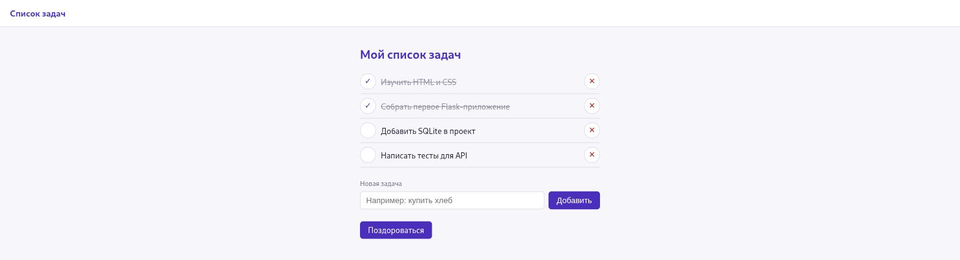

Итоговый проект: список задач на Flask и SQLite
Тот же список задач, с которого началась глава, — теперь с постоянным хранением, JSON API и проверкой ввода.
Всё, что разбирали разделы 22.7-22.34, сходится в одном рабочем приложении — том же списке задач, с которого началась глава, теперь с постоянным хранением в SQLite.
projects/flask/todo-app/app.py
| Файл | Роль |
|---|---|
| app.py | Маршруты, работа с базой данных, API |
| schema.sql | Структура таблицы tasks |
| templates/base.html | Общий каркас страницы, включая сообщения flash() |
| templates/index.html | Список задач, форма добавления |
| templates/privet.html | Историческая страница приветствия из раздела 22.5 |
| templates/404.html | Страница «не найдено» |
| static/style.css | Собственные стили, без внешних CDN |
Что умеет готовое приложение

method="post", а не простые ссылки <a href="/udalit/…">.Запуск
cd projects/flask/todo-app
python app.pyПервый запуск сам создаёт файл базы данных и таблицу — отдельная команда для этого не
нужна. Откройте http://127.0.0.1:5000/: добавьте задачу,
отметьте её выполненной, удалите, обновите страницу посреди процесса, перезапустите сам
процесс и убедитесь, что список остался прежним.
Приложение работает и на узких экранах: раскладка CSS (раздел 22.3) перестраивается под мобильную ширину без горизонтальной прокрутки страницы.
Добавьте в index.html строку с числом невыполненных задач — {{ zadachi|selectattr('done', 'equalto', 0)|list|length }}.
Измените запрос в glavnaya(), чтобы невыполненные задачи всегда показывались раньше выполненных — ORDER BY done, id.